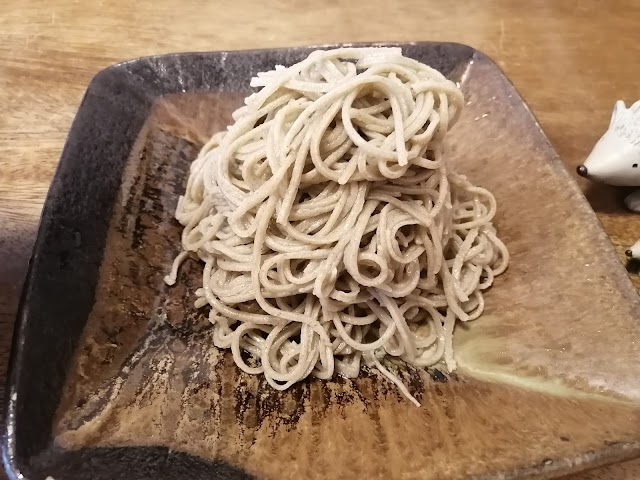
| 営業時間 | 月・水・木・金・土・日 11:30〜14:00, 18:00〜21:00 |
|---|---|
| 定休日 | 火曜 |
| 住所 | 大阪府藤井寺市道明寺６丁目２−８ |
| 予約 | 可 — ☎ 080-3785-3999 ／ 公式サイト |
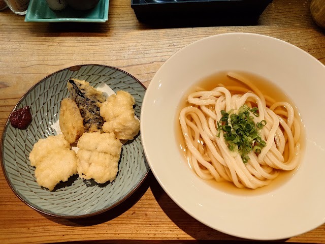
| 営業時間 | 月・火・土 11:00〜15:00 ／ 水・木・金 11:00〜15:00, 18:00〜21:00 |
|---|---|
| 定休日 | 日曜 |
| 住所 | 大阪府藤井寺市春日丘１丁目２−３ |
| 予約 | 要確認 — ☎ 072-931-2723 ／ 公式サイト |
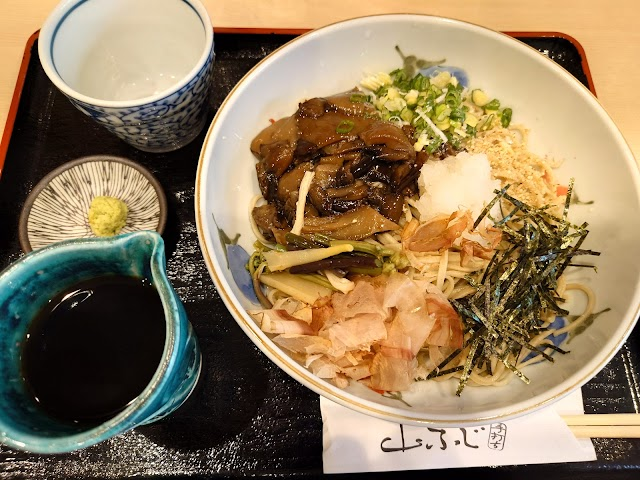
| 営業時間 | 月・水・木・金・土・日 11:00〜19:30 |
|---|---|
| 定休日 | 火曜 |
| 住所 | 大阪府藤井寺市藤井寺１丁目１６−３０ |
| 予約 | 可 — ☎ 072-936-0556 ／ 公式サイト |
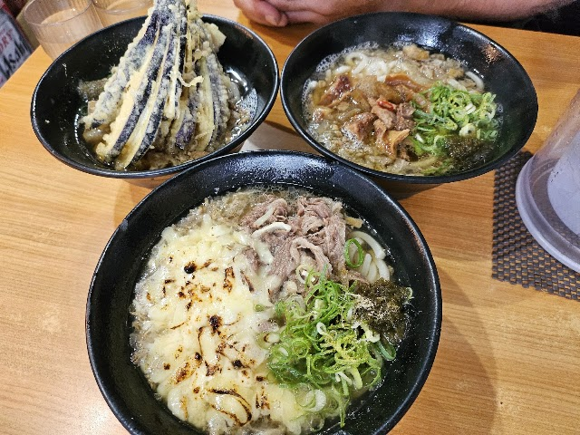
| 営業時間 | 月・火・水・木・金・土・日 24 :間営業 |
|---|---|
| 定休日 | なし(要最終確認) |
| 住所 | 大阪府藤井寺市沢田１丁目２８−１ |
| 予約 | 要確認 — ☎ 072-954-6490 ／ 公式サイト |
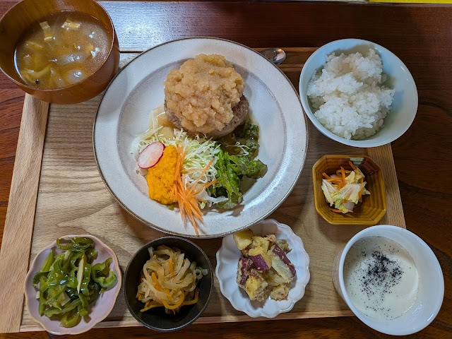
| 営業時間 | 月・火・水 11:00〜14:30 |
|---|---|
| 定休日 | 木・金・土・日曜 |
| 住所 | 大阪府藤井寺市小山１丁目１６−４４ |
| 予約 | 要確認 — ☎ 072-955-2927 ／ 公式サイト |
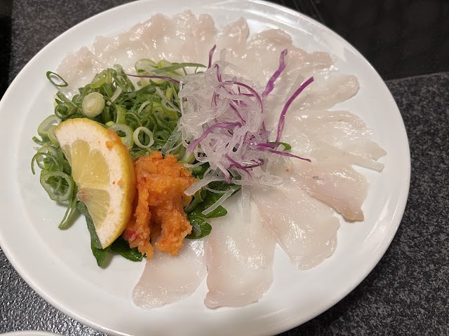
| 営業時間 | 月・水・木・金・土・日 17:30〜23:00 |
|---|---|
| 定休日 | 火曜 |
| 住所 | 大阪府藤井寺市御舟町９−８ |
| 予約 | 可 — ☎ 072-953-2990 ／ 公式サイト |
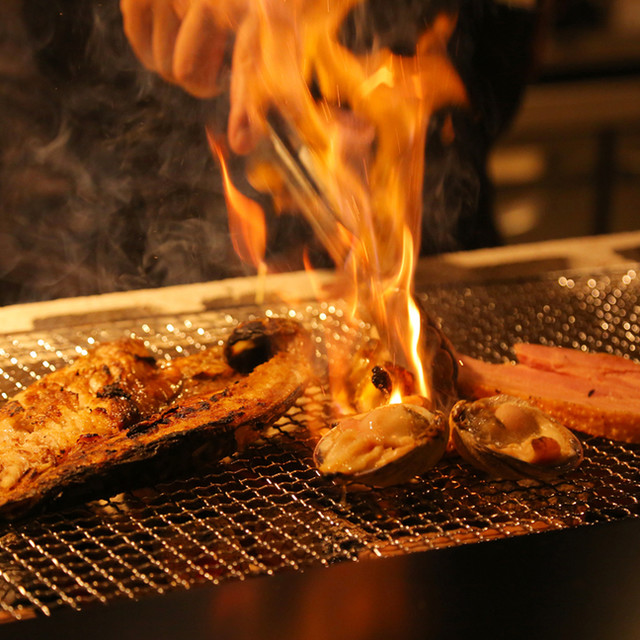
| 営業時間 | 月・火・水・木・金・土・日 17:00〜0:00 |
|---|---|
| 定休日 | なし(要最終確認) |
| 住所 | 大阪府藤井寺市春日丘１丁目２−３ |
| 予約 | 可 — ☎ 072-959-8876 ／ 公式サイト |
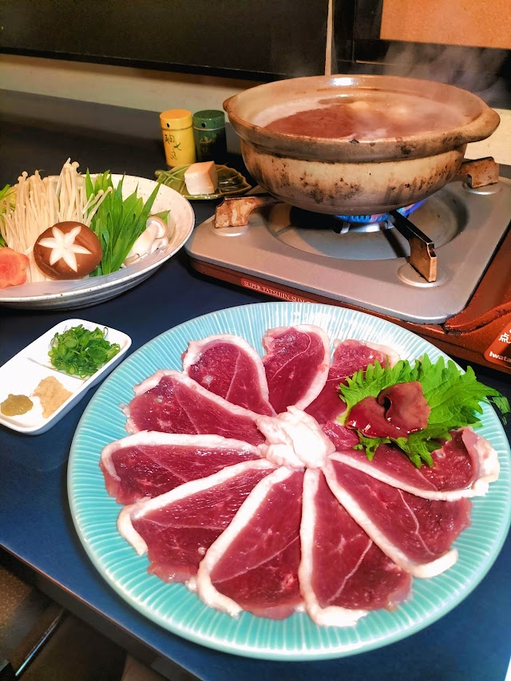
| 営業時間 | 月・火・水・木・金・土 17:00〜23:00 |
|---|---|
| 定休日 | 日曜 |
| 住所 | 大阪府松原市上田２丁目１−１５ |
| 予約 | 可 — ☎ 072-333-7530 ／ 公式サイト |
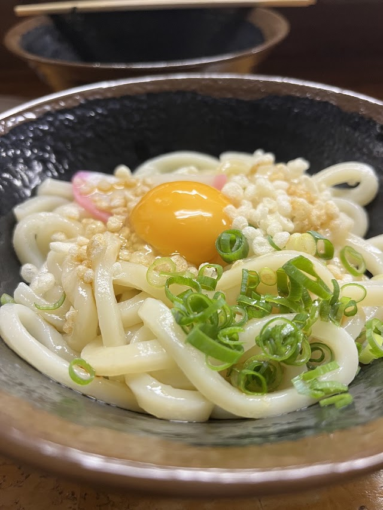
| 営業時間 | 水・木・金・土・日 19:00〜22:00 |
|---|---|
| 定休日 | 月・火曜 |
| 住所 | 大阪府柏原市本郷５丁目１９６ |
| 予約 | 要確認 |
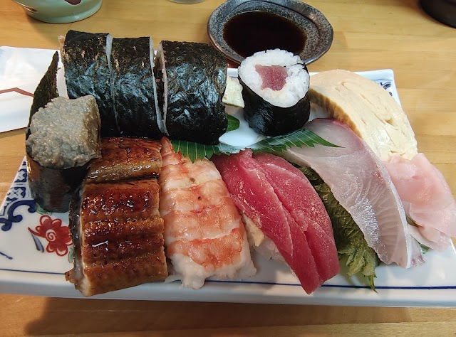
| 営業時間 | 火・水・木・金・土・日 10:30〜21:00 |
|---|---|
| 定休日 | 月曜 |
| 住所 | 大阪府藤井寺市道明寺２丁目１０−１ 道明寺ハイツ西館 |
| 予約 | 可 — ☎ 072-954-9506 |
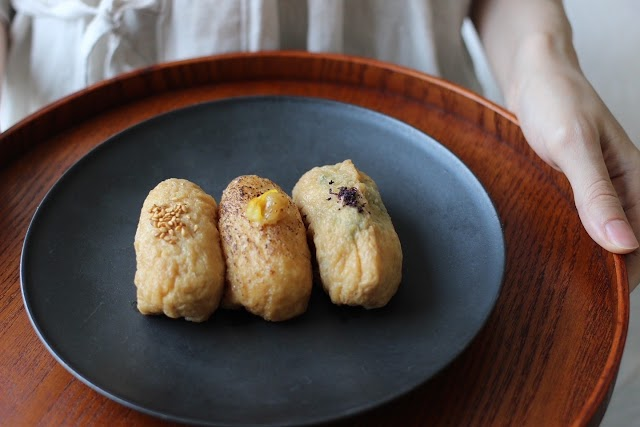
| 営業時間 | 水・木・金・土 11:00〜18:00 ／ 日 11:00〜14:00 |
|---|---|
| 定休日 | 月・火曜 |
| 住所 | 大阪府藤井寺市藤井寺２丁目２−１８ 新栄プロパティ 207号室 |
| 予約 | 可 — ☎ 070-7573-8166 ／ 公式サイト |
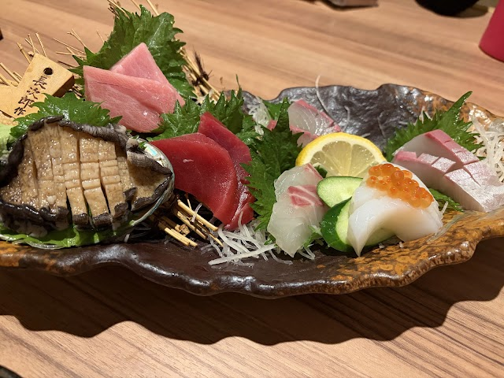
| 営業時間 | 月・火・金・土・日 11:30〜14:30, 17:00〜23:00 ／ 木 17:00〜23:00 |
|---|---|
| 定休日 | 水曜 |
| 住所 | 大阪府藤井寺市沢田１丁目４−１１ |
| 予約 | 可 — ☎ 072-942-5899 ／ 公式サイト |
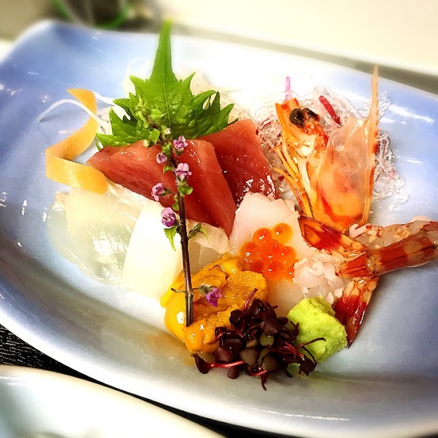
| 営業時間 | 月・火・木・金・土・日 17:30〜23:00 |
|---|---|
| 定休日 | 水曜 |
| 住所 | 大阪府羽曳野市南恵我之荘３丁目５−２２ |
| 予約 | 可 — ☎ 072-976-5335 ／ 公式サイト |
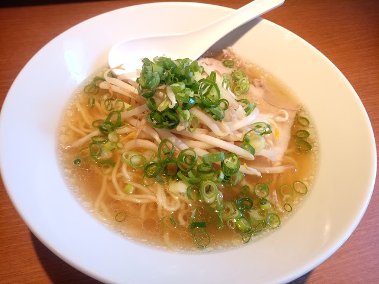
| 営業時間 | 月・火・木・金・土 11:30〜13:30 |
|---|---|
| 定休日 | 水・日曜 |
| 住所 | 大阪府藤井寺市藤井寺１丁目１−１０ |
| 予約 | 要確認 — ☎ 072-951-5487 |
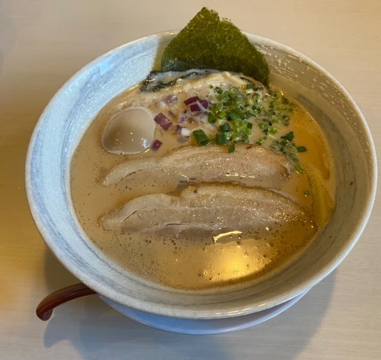
| 営業時間 | 月・火・水・金・土・日 11:00〜14:30, 18:00〜21:30 |
|---|---|
| 定休日 | 木曜 |
| 住所 | 大阪府藤井寺市野中５丁目４−２５ |
| 予約 | 要確認 — ☎ 072-937-7277 |
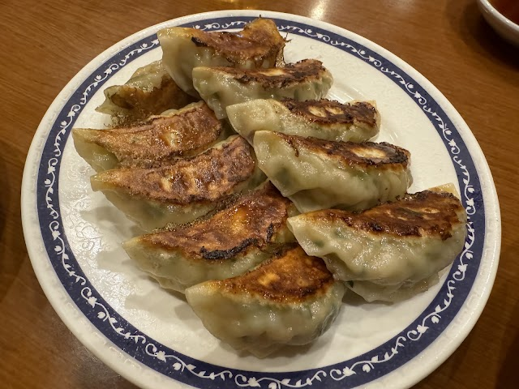
| 営業時間 | 火・水・木・金・土・日 11:30〜15:00, 17:00〜22:00 |
|---|---|
| 定休日 | 月曜 |
| 住所 | 大阪府藤井寺市岡２丁目７−６７ |
| 予約 | 可 — ☎ 072-953-2298 |
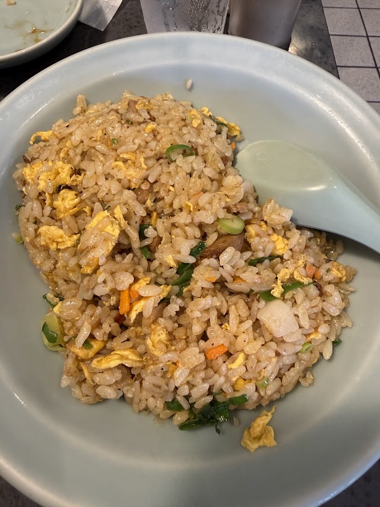
| 営業時間 | 月・火・水・金・土・日 11:00〜13:20, 17:00〜19:20 |
|---|---|
| 定休日 | 木曜 |
| 住所 | 大阪府藤井寺市道明寺１丁目２２−１７ 道明寺駅前ビル |
| 予約 | 可 — ☎ 072-952-3229 |
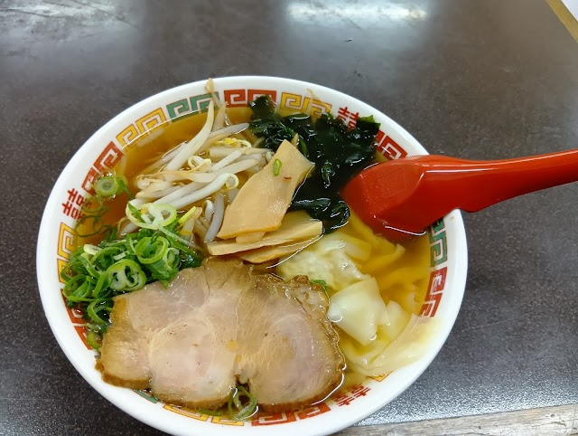
| 営業時間 | 月・火・水・木・金・土・日 11:30〜14:40, 17:00〜20:40 |
|---|---|
| 定休日 | なし(要最終確認) |
| 住所 | 大阪府羽曳野市高鷲９丁目２−３ |
| 予約 | 可 — ☎ 072-939-0486 |
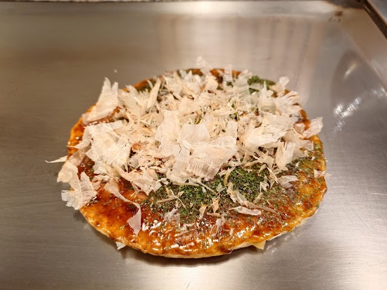
| 営業時間 | 月・水・木・金・土・日 11:00〜20:00 |
|---|---|
| 定休日 | 火曜 |
| 住所 | 大阪府藤井寺市岡１丁目１３−１１ |
| 予約 | 可 — ☎ 072-955-9580 |
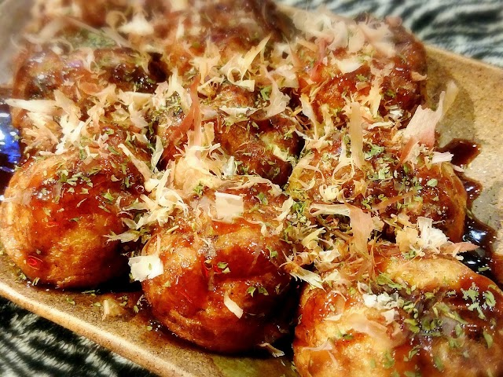
| 営業時間 | 月・火・金・土・日 18:30〜1:00 |
|---|---|
| 定休日 | 水・木曜 |
| 住所 | 大阪府藤井寺市御舟町１２−１８ |
| 予約 | 可 — ☎ 072-979-7515 ／ 公式サイト |
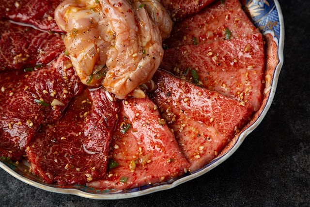
| 営業時間 | 月・水・木・金・土・日 17:30〜23:00 |
|---|---|
| 定休日 | 火曜 |
| 住所 | 大阪府藤井寺市岡２丁目６−９ ＤＨ第２ビル 1F東 |
| 予約 | 可 — ☎ 072-931-0559 ／ 公式サイト |
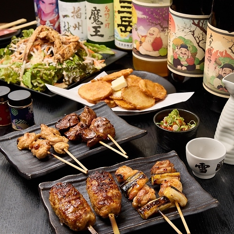
| 営業時間 | 月・水・木・金・土・日 17:30〜23:00 |
|---|---|
| 定休日 | 火曜 |
| 住所 | 大阪府藤井寺市藤井寺１丁目１−１７ ２階 |
| 予約 | 可 — ☎ 072-954-1300 ／ 公式サイト |
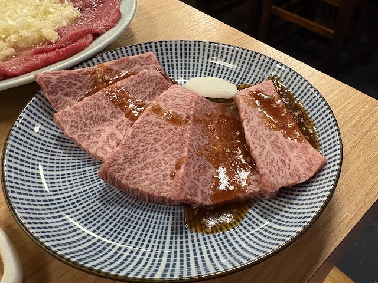
| 営業時間 | 月・火・水・木・金・土 11:30〜14:30, 17:00〜23:00 ／ 日 11:30〜14:30, 17:00〜22:30 |
|---|---|
| 定休日 | なし(要最終確認) |
| 住所 | 大阪府羽曳野市野３５３−１ 大谷ビル 1F |
| 予約 | 可 — ☎ 072-938-3272 ／ 公式サイト |
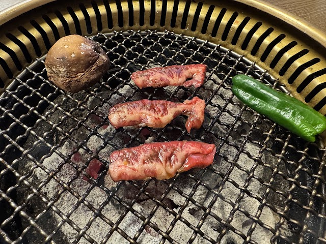
| 営業時間 | 月・火・水・木・金・土・日 17:00〜22:00 |
|---|---|
| 定休日 | なし(要最終確認) |
| 住所 | 大阪府羽曳野市大黒３１０ |
| 予約 | 可 — ☎ 072-959-5598 |
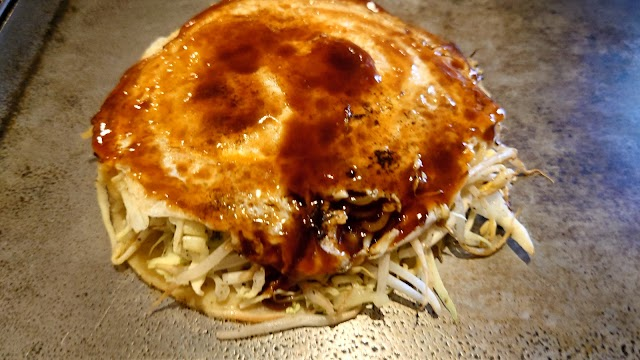
| 営業時間 | 火・木・土・日 11:00〜15:00, 17:00〜22:00 ／ 水・金 11:00〜15:00, 17:00〜20:00 |
|---|---|
| 定休日 | 月曜 |
| 住所 | 大阪府藤井寺市藤井寺１丁目１−５ |
| 予約 | 可 — ☎ 072-942-6623 ／ 公式サイト |
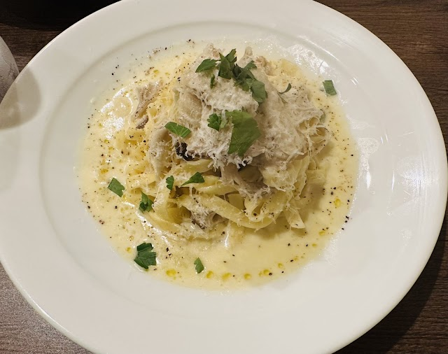
| 営業時間 | 月・火・木・金・土・日 11:30〜15:00, 17:00〜21:30 |
|---|---|
| 定休日 | 水曜 |
| 住所 | 大阪府藤井寺市藤井寺１丁目２−８ |
| 予約 | 可 — ☎ 072-938-3510 ／ 公式サイト |
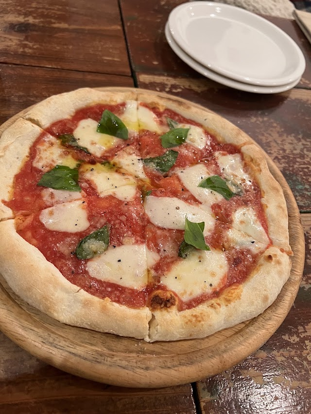
| 営業時間 | 月・水・木・金・土・日 11:00〜21:00 |
|---|---|
| 定休日 | 火曜 |
| 住所 | 大阪府藤井寺市藤井寺２丁目２−１８ 新栄プロパティ 207号室 |
| 予約 | 可 — ☎ 072-937-8876 ／ 公式サイト |
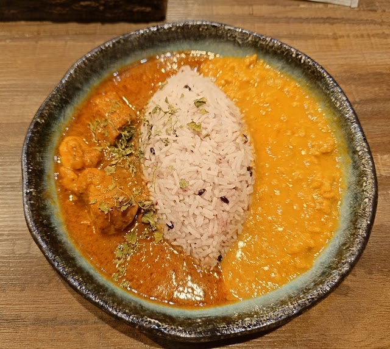
| 営業時間 | 月・木・金・土・日 11:30〜14:00, 18:00〜20:30 |
|---|---|
| 定休日 | 火・水曜 |
| 住所 | 大阪府藤井寺市藤井寺１丁目１６−３９ |
| 予約 | 要確認 — ☎ 080-8042-6058 ／ 公式サイト |
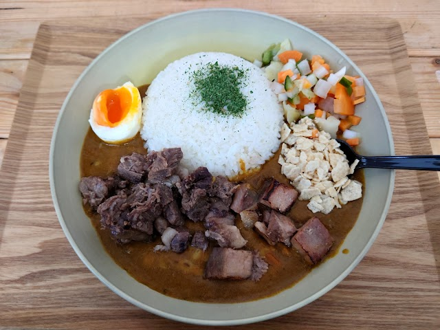
| 営業時間 | 水・木 11:45〜13:15 |
|---|---|
| 定休日 | 月・火・金・土・日曜 |
| 住所 | 大阪府藤井寺市岡２丁目１２−４ |
| 予約 | 要確認 — ☎ 072-959-6515 ／ 公式サイト |
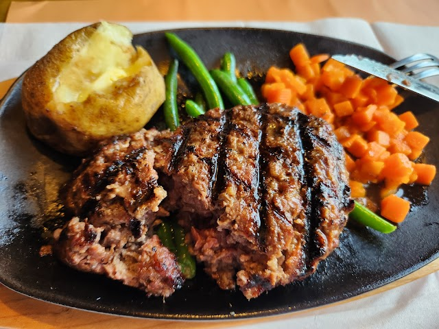
| 営業時間 | 月・火・水・木・金・土・日 11:00〜14:00, 17:00〜21:00 |
|---|---|
| 定休日 | なし(要最終確認) |
| 住所 | 大阪府藤井寺市野中２丁目６６ |
| 予約 | 可 — ☎ 072-939-1700 ／ 公式サイト |
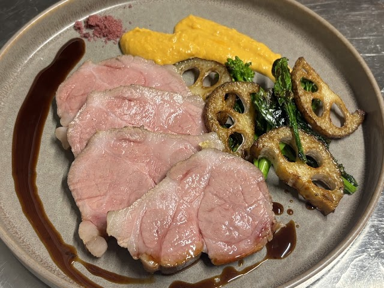
| 営業時間 | 月・水・木 11:30〜13:30, 18:00〜22:00 ／ 金・土・日 11:30〜13:30, 17:00〜22:00 |
|---|---|
| 定休日 | 火曜 |
| 住所 | 大阪府藤井寺市岡１丁目１５−１７ ２階 |
| 予約 | 可 — ☎ 080-6424-2495 ／ 公式サイト |
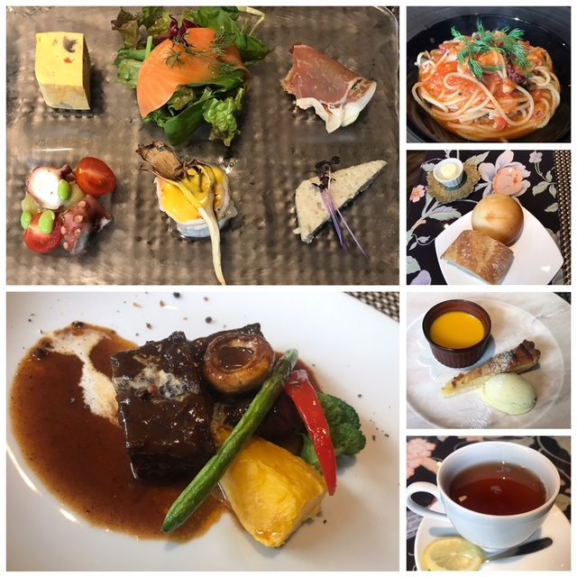
| 営業時間 | 11:30〜14:30/18:00〜21:30 |
|---|---|
| 定休日 | 火曜・水曜 |
| 住所 | 大阪府羽曳野市誉田3-15-30 石橋ビルB1 |
| 予約 | 要確認 — 公式サイト |
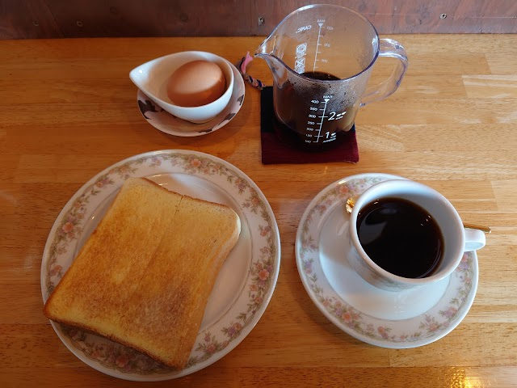
| 営業時間 | 平日8:00〜17:00、土曜9:00〜15:00 |
|---|---|
| 定休日 | 日祝不定休 |
| 住所 | 大阪府藤井寺市小山新町９−２１ |
| 予約 | 要確認 — ☎ 070-5263-4151 ／ 公式サイト |
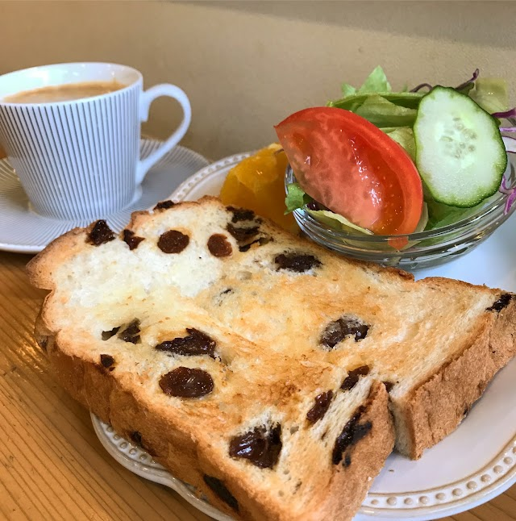
| 営業時間 | 8:30〜17:30（LO17:00） |
|---|---|
| 定休日 | 水曜・祝日休 |
| 住所 | 大阪府藤井寺市道明寺２丁目９−５ |
| 予約 | 要確認 |
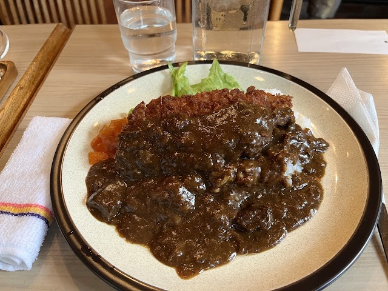
| 営業時間 | 月・火・水・金・土・日 8:00〜17:00 |
|---|---|
| 定休日 | 木曜 |
| 住所 | 大阪府藤井寺市道明寺１丁目２２−１９ |
| 予約 | 要確認 — ☎ 072-939-0456 ／ 公式サイト |
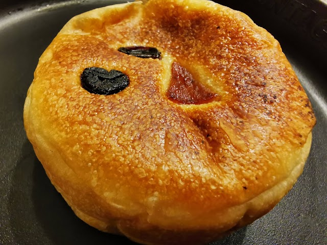
| 営業時間 | 火・水・木・金・土 9:00〜17:00 |
|---|---|
| 定休日 | 月・日曜 |
| 住所 | 大阪府藤井寺市道明寺１丁目１６−５３ |
| 予約 | 要確認 — ☎ 072-959-3076 ／ 公式サイト |
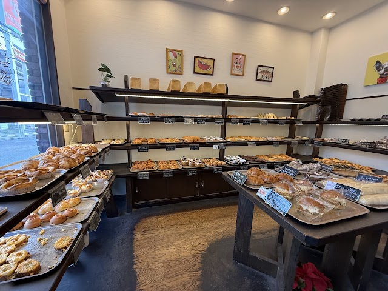
| 営業時間 | 月・水・木・金・土・日 7:00〜19:30 |
|---|---|
| 定休日 | 火曜 |
| 住所 | 大阪府藤井寺市岡１丁目４−３７ |
| 予約 | 要確認 — ☎ 072-952-1185 |
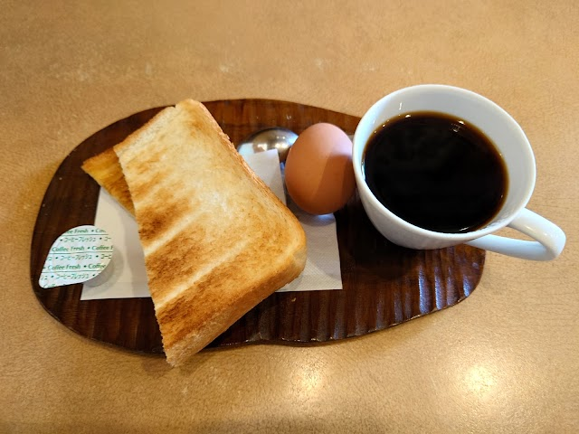
| 営業時間 | 月・火・水・木・金・土 7:00〜18:00 |
|---|---|
| 定休日 | 日曜 |
| 住所 | 大阪府藤井寺市春日丘１丁目２−３ |
| 予約 | 要確認 |
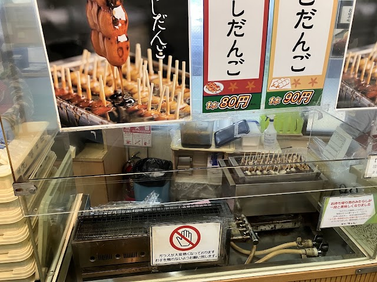
| 営業時間 | 月・火・水・木・金・土・日 9:00〜18:00 |
|---|---|
| 定休日 | なし(要最終確認) |
| 住所 | 大阪府藤井寺市小山６丁目５−４６ |
| 予約 | 要確認 — ☎ 072-952-0105 ／ 公式サイト |
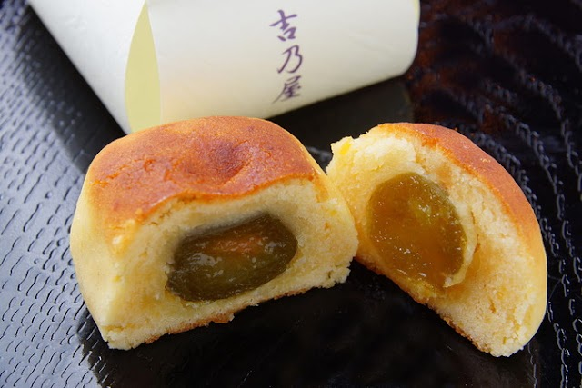
| 営業時間 | 月・火・木・金・土・日 9:00〜19:00 |
|---|---|
| 定休日 | 水曜 |
| 住所 | 大阪府藤井寺市岡２丁目１−４８ |
| 予約 | 要確認 — ☎ 072-938-1801 ／ 公式サイト |
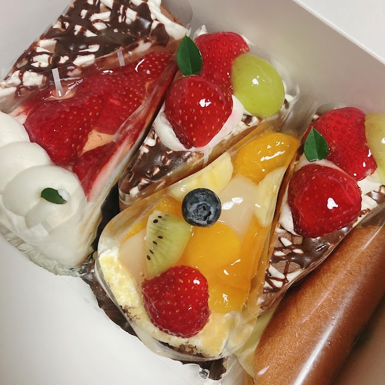
| 営業時間 | 月・火・木・金・土・日 11:00〜20:00 |
|---|---|
| 定休日 | 水曜 |
| 住所 | 大阪府藤井寺市野中２丁目５４−１ |
| 予約 | 要確認 — ☎ 072-952-6040 ／ 公式サイト |
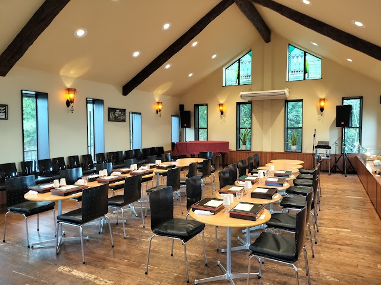
| 営業時間 | 月・火・水・木・金 10:00〜18:00 ／ 土・日 9:00〜18:00 |
|---|---|
| 定休日 | なし(要最終確認) |
| 住所 | 大阪府羽曳野市駒ヶ谷１０２７ |
| 予約 | 要確認 — ☎ 072-956-0181 ／ 公式サイト |
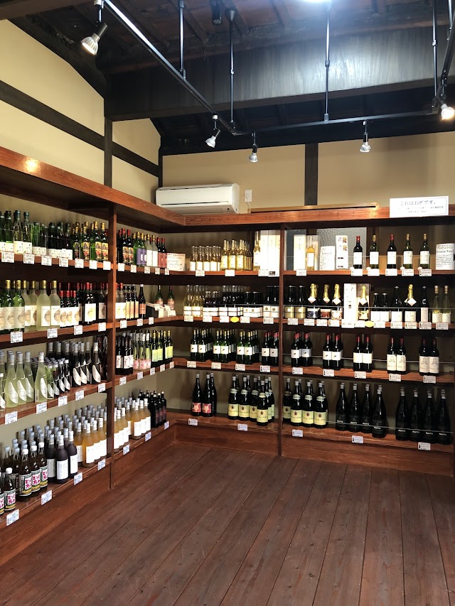
| 営業時間 | 平日10:00〜18:00／土日祝10:00〜17:00 |
|---|---|
| 定休日 | 要確認（見学・試飲会は要予約） |
| 住所 | 大阪府柏原市太平寺２丁目９−６ |
| 予約 | 要確認 — ☎ 072-971-6334 ／ 公式サイト |
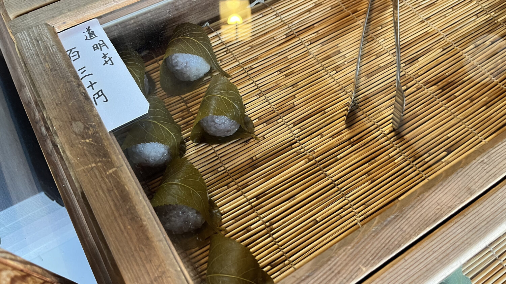
| 営業時間 | 9:00〜19:00 |
|---|---|
| 定休日 | 月曜 |
| 住所 | 大阪府藤井寺市道明寺6-16-14 |
| 予約 | 要確認 — ☎ 072-955-1259 |
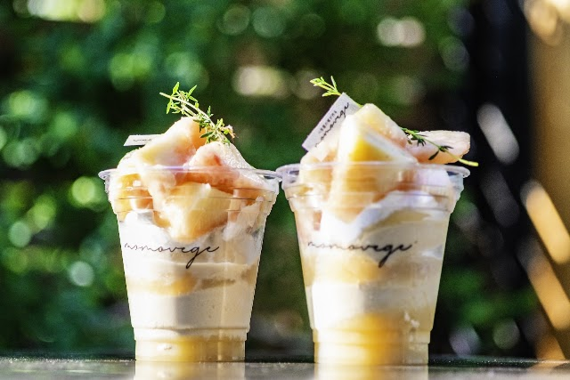
| 営業時間 | 火・水・木・金・土・日 10:00〜17:00 |
|---|---|
| 定休日 | 月曜 |
| 住所 | 大阪府柏原市清州２丁目４−２０ |
| 予約 | 要確認 — ☎ 072-943-4389 ／ 公式サイト |
本ガイドは個人利用目的で作成。掲載情報は2026年8月時点の調査に基づく。写真出典: Google Maps投稿写真(©各投稿者/Google)。